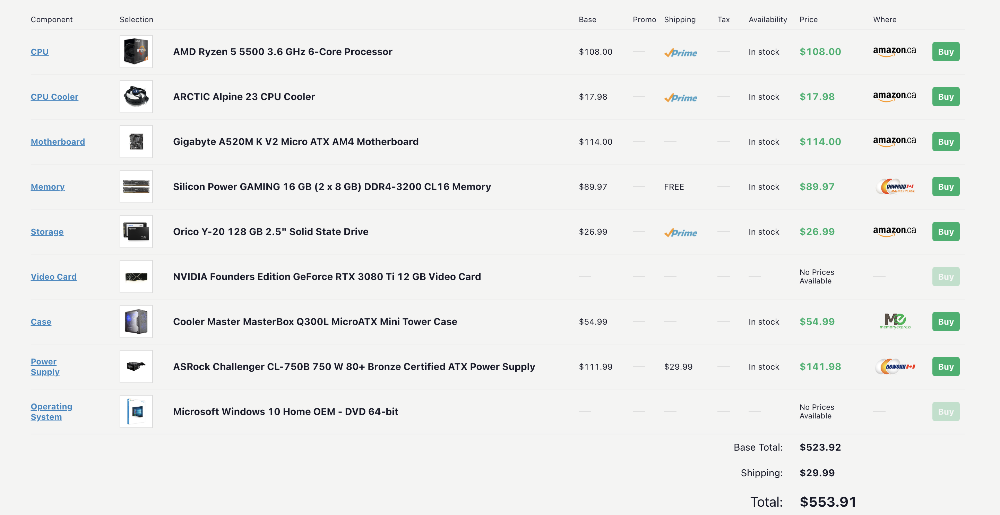
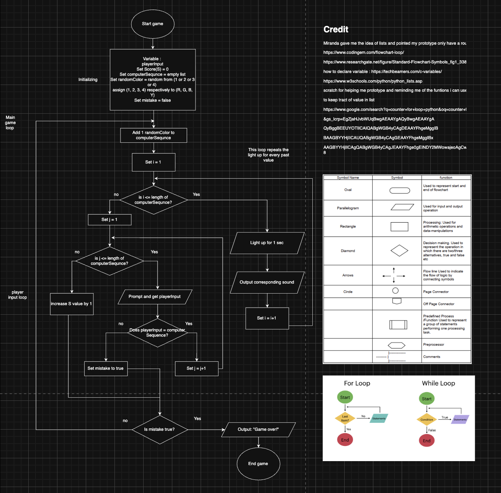

Overview
Intro to programming
I started learning coding in scratch with basic commands, focusing on loops. Here's the result
Pc Build
This is a computer build activity that we did in class, competeing for who can build the cheepest computer that will run cyberpunk 2077. We learned about
- Memory
- Storage
- RAM
- etc.

PB&J Pseudocode
- Open the bag of bread from the opening end
- Take out two pieces of bread from the bag and put it on the plate
- Put the bag to the side
- Put the two pieces of bread separated on the plate
- Take the jelly can and twist lid until it opens
- Put the lid on the side
- hold the non-sharp end of the knife
- Stick the sharp end of the knife in to the opening of the jelly can
- Gather a spoonful size of jelly on the blade side of the knife
- >Move the knife on to one of the bread, while balancing the jelly on the knife
- Tilt the knife so the jam drops on the bread
- Spread the jam evenly with the knife so 80% of the bread is covered with jelly
- Lay knife down beside the plate
- >Take the jelly can lid
- Match lid with jelly can opening
- Twist until close
- Take a tissue
- Grab the knife using the non-sharp end
- Match sharp end of the knife to the tissue
- Wipe the knife by rubbing both side of the sharp end of the knife using the wipe
- After the knife is clean without jelly set knife and tissue separately aside
- Take the butter can and twist lid until it opens
- Put the lid on the side
- hold the non-sharp end of the knife
- Stick the sharp end of the knife in to the opening of the pbutter can
- Gather a spoonful size of pbutter on the blade side of the knife
- Move the knife on to the bread without jelly, while balancing the butter on the knife
- Tilt the knife so the pbutter drops on the bread
- >Spread the butter evenly with the knife so 80% of the bread is covered with butter
- Lay knife down beside the plate
- Take the butter can lid
- Match lid with butter can opening
- Twist until close
- Take the butter spread bread
- Put it on top of the jelly spread bread
Implementing Algorithms
This is another activity we did. Focusing on algorithms and boolean functions
What I Learned
- Flowcharts
- Pseudocode
- Loops and boolean fucntions
Code Snippet

Back to Projects or play other games in the Gaming Corner flow